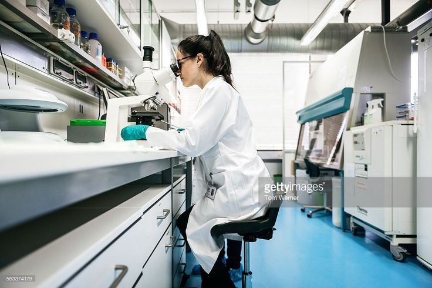
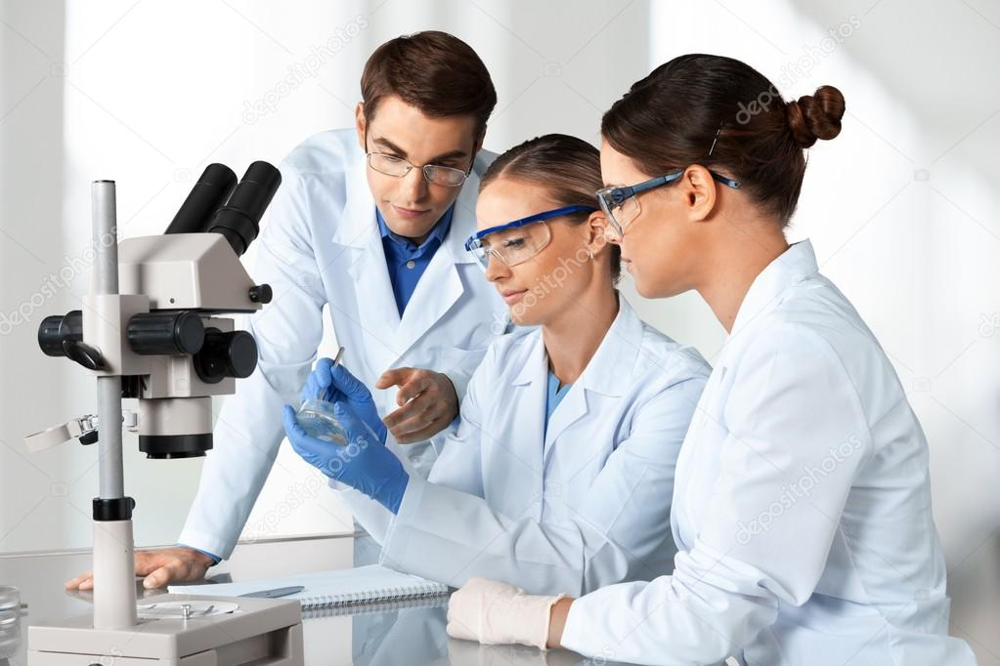

WORKING EXPERIANCE
-

January- August(2020)
LABORATORY ASSISTANT
Worked as a Laboratory Assistant at Hemas Laboratory, Had a good experiance on Laboratory work and the manufacturing side of differant chemicals and products.
-

December(2020)-April(2021)
TEACHER
As a volenteer service worked as science teacher for grade 6-7 students at a school in our village.
-

August(2021)-January(2022)
LABORATORY ASSISTANT
Worked as a laboratory assistant at Baur's company which gave a good training on product developing.